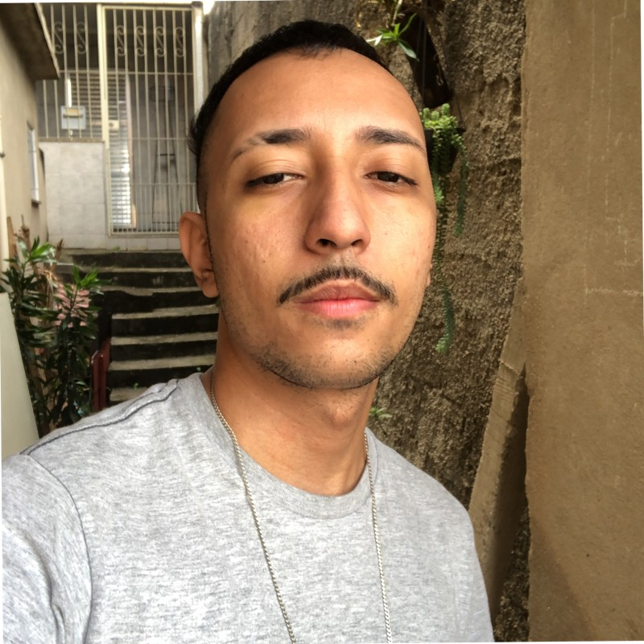

Lucas de Freitas
Desenvolvedor Frontend Júnior

Sobre
Oi! Meu nome é Lucas de Freitas, seja bem-vindo (a)!
Sempre fui apaixonado por tecnologia. Tenho contato com esse mundo desde os meus 14 anos quando ganhei meu primeiro video game. Quero me tornar um dev pois varios amigos meus me indiracaram a carreira e tudo o que ela proporciona, tbm tenho vontade de ajudar meus pais em casa e sinto que com uma vaga nessa area isso é totalmente possivel. HTML, CSS e JavaScript. Gosto muito de café, e meus principais hobbies são jogar MMO RPG, ver animes e torcer para o GSW.